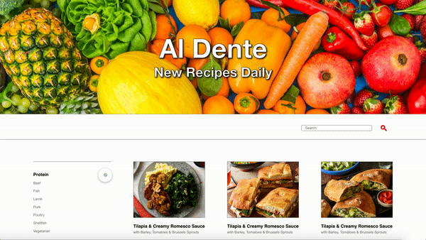
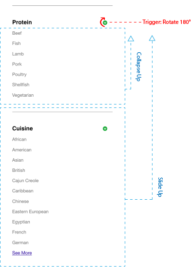

I would like to impliment a toggle button that hides/shows filters for a cookbook website.
Trigger: The user clicks a button.
Rules: When the user clicks the button by the filter's header, the visibility of the category listings underneath it are toggled -
If the category is visible, it collapses and the content underneath flows up.
If the category is not visible, it expands downwards, and the content underneath it flows down.
Feedback: The section either expands or shrinks. The arrow icon that is the trigger rotates 180 degrees.
Loops: N/A
Modes: N/A
